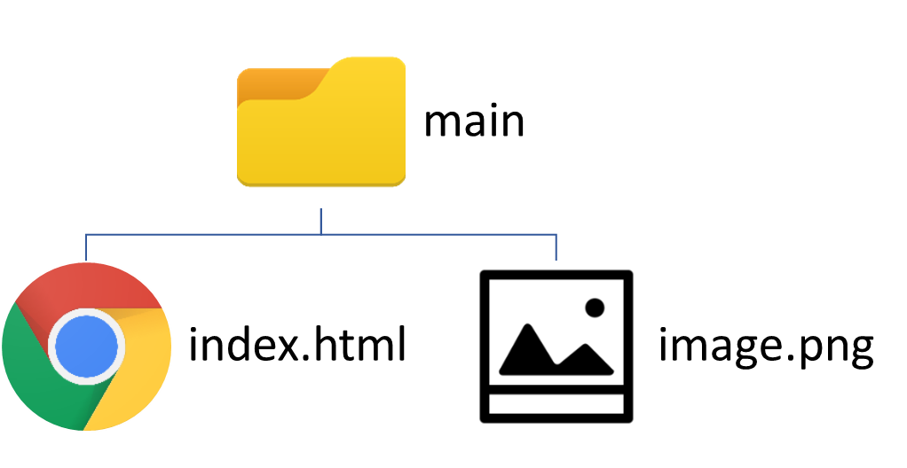
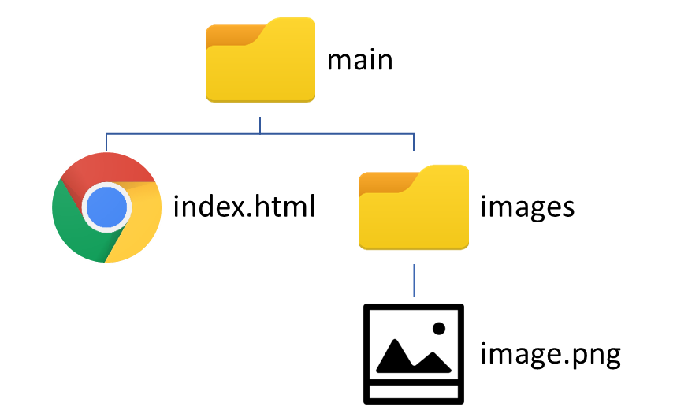
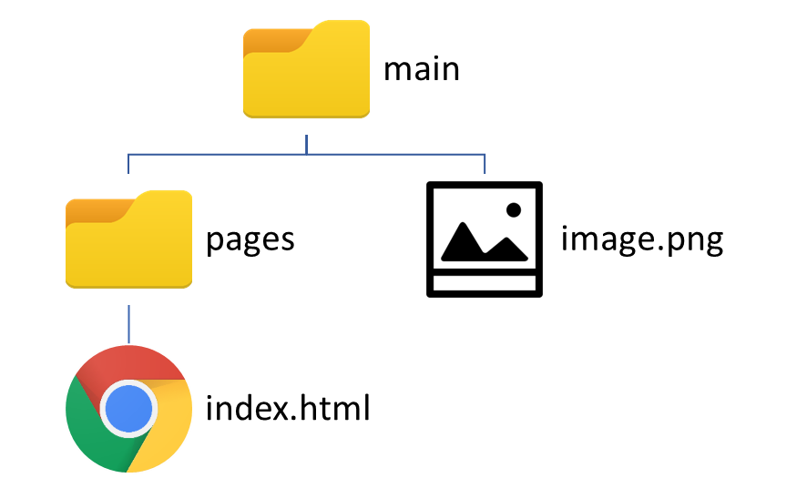
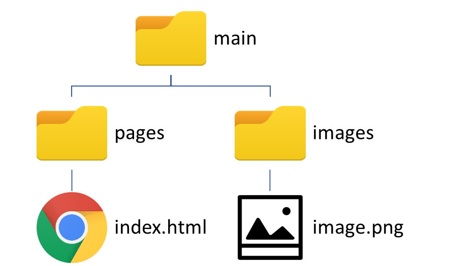

Як додати зображення
<img>
.png)
Для створення зображення використовують тег <img> але одного його недостатньо, слід додати атрибут src="", де у лапках пишемо шлях до зображення. Шлях до зображення показує ,як до нього дістатись.
See the Pen GVXoWG by artem (@artemndreevich) on CodePen.

Якщо сторінка лежить біля зображення (у одный теці), то шлях вказувати не треба. Потрібно лише вказати назву зображення
та його розширення. Наприклад, у src="image.png"
ми вказали шлях до зображення з назвою image та розширенням .png, що знохидиться у одній теці з HTML-файлом в якому цей шлях прописаний.
А якщо зображення знаходиться у іншій теці?
Роздивимось 2 варіанти: коли тека з зображенням знаходиться всередині теки з HTML-файлом, та коли зображення знаходиться поза текою HTML-файла.

Якщо зображення знаходиться в теці, яка знаходиться в теці з HTML-файлом, як на зображенні ліворуч, то у маршруті треба вказати теку, в якій знаходиться зображення.
Для цього у src="" пишемо назву теки, в яку треба зайти від index.html щоб дістатись зображення (в нашому випадку images), потім пишемо знак "/" і вже потім ім'я зображення.
<img src="images/image.png">

Якщо ж зображення знаходиться взагалі поза текою HTML-файла, як у прикладі зліва, тоді щоб дістатись до
зображення треба спочатку вийти із теки в якій знаходиться HTML-файл (index.html). Для цього
у src="" пишемо "../", що означає вихід із теки, а потім пишемо ім'я зображення.
<img src="../image.png">

Якщо ж це зображення буде у якійсь теці, яка знаходиться на одному рівні вкладенності з текою pages,
то після виходу з теки pages (../) треба буде вказати ще назву теки в якій знаходиться зображення (images/) і в кінці ім'я зображення.
<img src="../images/image.png">
Завдання 1:
Створіть теку lesson8. У ній створіть 2 теки: exercises та images.
У теку images помістіть 3 будь-яких зображення, а у теці exercises створіть HTML-сторінку на якій
вони мають відображатись.
Майте на увазі, якщо шлях до зображень
буде вказано неправильно, вони не відобразяться
Дійсно,ми вставили зображення. Але воно завелеке,переходимо до наступної частини.
Додаткові атрибути
Робота з розміром
А тепер виправимо проблему розміру зображення. Атрибути height='' та width='' контролюють розмір зображення по висоті та ширині відповідно. У лапки слід записати розмір у пікселях (px)
See the Pen BXOKbL by artem (@artemndreevich) on CodePen.
Зверніть увагу! Як ви, мабуть, помітили, зображення змінило свої пропорції.
Це тому що ми вказали height="80px" та width="200px" які, звичайно, зменшили висоту та ширину до
відповідних значеннь, але й порушили початкові пропорції зображення, тому воно виглядає таким "сплюснутим".
Щоб цього ефекту запобігти і зображення змінило розмір зберігаючи оригінальні пропорції, треба вказувати лише висоту,
або лише ширину. Тоді другий показник зміниться пропорційно першому.
Бачите різницю?
До цього ми вказували ширину у пікселях, проте її можна вказати ще й у відсотках. Це відсоткове значення застосовується
відносно оригінальної ширини зображеня. Тобто, якщо ви вкажете width="50%", нова ширина
становитиме 50% від початкової, тобто зменшиться вдвічі.
Проте у такий спосіб не можна вказати висоту. Вона зміниться пропорційно ширині, навіть якщо ви все-таки спробуєте вказати
ії у відсотках.
У нас вийшло змінити розмір зображення, але що станеться, якщо вказати неправильний шлях?
Інші атрибути
Але інколи зображення не завантажується і ви бачите це
See the Pen vozKjg by artem (@artemndreevich) on CodePen.
Тоді ми додаємо атрибут alt='', у лапки вписуємо текст, який має відобразитися, коли зображенення не завантажиться.
See the Pen vozKjg by artem (@artemndreevich) on CodePen.
Тепер ще один атрибут - title='', у лапки вписуємо текст, який має відобразитися, коли на зображення буде наведено вказівник миші.
See the Pen mNGrQz by artem (@artemndreevich) on CodePen.
Завдання 2:
Попрацюйте з зображеннями які ви додали на сторінку у першому завданні: додайте вспливаючі підказки з коротким змістом зображень, додайте alt та зменшіть усі три зображення так, щоб вони мали одну висоту та вміщались у один рядок.
Завдання:
Вставте зображення з інтернету та таке саме,але вже завантажене й порівняйте швидкість їх завантаження.
Підсумуємо:
| Для створення забраження використовується тег <img> та атрибут src="" | 
|
| Ширина і висота зображення змінюється за допомогою атрибутів width="" та height="" відповідно. | |
| У тега <img> є додатковий атрибут alt='', який відповідає за альтернативний текст. |  |
| Для додавання назви (спливаючої підказки) використовують атрибут title='' | |